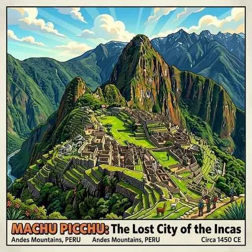
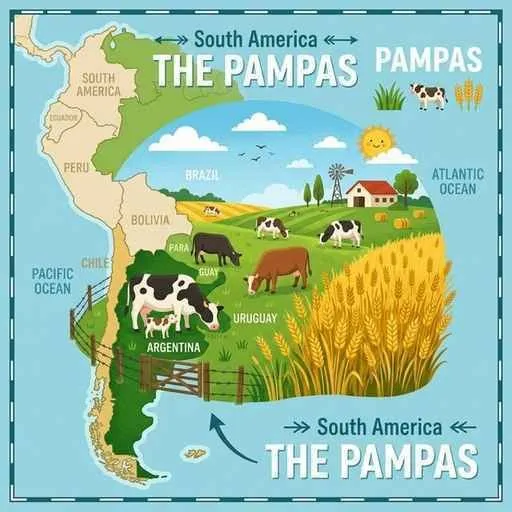

6. 南アメリカ州
南アメリカ州は、南北に走る険しいアンデス山脈や、世界最大の水量を誇るアマゾン川など、スケールの大きな自然が広がる地域です。かつてのインカ帝国の歴史、スペイン・ポルトガルの植民地支配がもたらした言語や宗教の特色、そして近年目覚ましい工業化・農業開発を進めるブラジルなどの産業構造について詳しく解説します！
1. 南アメリカの自然環境と気候
南アメリカ大陸は、急峻な山脈と広大な熱帯雨林、そして豊かな草原（パンパ）が同居する多様な地勢が特徴です。

図1：標高2,400mのアンデス山中に築かれたインカ帝国の遺跡「マチュピチュ」
- アンデス山脈：太平洋に沿って、大陸の西側を南北に走る険しく高い山脈です。標高が高いため、赤道直下の国であっても、首都（エクアドルのキトやコロンビアのボゴタなど）は一年中春のように涼しい気候（高山気候）になります。
- アマゾン川とセルバ：世界最大の流域面積を誇る大河。流域には「セルバ」と呼ばれる広大な熱帯雨林（密林）が広がります。近年は、内陸開発のために建設された「トランスアマゾニアンハイウェー」などによる過剰な森林開発と環境破壊が懸念されています。
- パンパとラプラタ川：アルゼンチン中部には、小麦の栽培や牛の放牧に適した肥沃な温帯草原「パンパ」が広がります。その南東部には、大きな河口を持つラプラタ川が流れます。
- アタカマ砂漠とエルニーニョ現象：チリ北部には、世界で最も乾燥した「アタカマ砂漠」があります。また、数年に一度、ペルー沖の海水温が異常に上昇して世界各地に異常気象をもたらす「エルニーニョ現象」が発生します。
2. 歴史的背景と多様な文化（言語・人種・宗教）
南米は、ヨーロッパ諸国の植民地となったことで、言語や宗教、人種が大きく変化しました。
- インカ帝国：13世紀頃からアンデス地方に栄えた高度な石造建築技術を持つ帝国。16世紀にスペイン人によって滅ぼされました。「空中都市」と呼ばれるマチュピチュはその代表的な遺跡です。
- 植民地支配と言語の境界（最重要！）：南米の大部分はスペインの植民地となりましたが、東部の大国ブラジルはポルトガルの植民地となりました。このため、ブラジルの公用語はポルトガル語であり、その他のほとんどの国ではスペイン語が使われています。
- 人種の混血と先住民：南米の先住民はインディオと呼ばれます。植民地支配の過程で、ヨーロッパ系白人と先住民との混血が進み、これらは「メスチソ」と呼ばれ、社会の大きな割合を占めています。
- 宗教：かつての宗主国の影響を強く受け、人々の多くはキリスト教のカトリックを熱心に信仰しています。
3. 産業と経済（モノカルチャーからの脱却と資源）
かつては特定の資源や作物の輸出に頼る「モノカルチャー経済」でしたが、近年は工業化や地域協力を強めています。

図2：アルゼンチンの肥沃な草原「パンパ」で行われる大規模な牧畜
- ブラジルの躍進：南米最大の面積と人口を誇り、BRICSの一員です。
- 農産物：世界一の生産量を誇るコーヒー豆に加え、近年は食用油や飼料用の大豆の生産が爆発的に増加しています。主食の澱粉（タピオカ）原料となるキャッサバも栽培されます。
- バイオエタノール：サトウキビなどを原料として作られる自動車用の代替燃料「バイオエタノール」の開発・普及が世界一進んでおり、環境に優しいエネルギーの先駆けとなっています。
- 地下資源：高品質な鉄鉱石が豊富に産出されます。
- 日本の関わりと首都：かつて多くの日本人がコーヒー農園などに移住した歴史があり、日系人社会が築かれています。首都は、内陸部開発のためにリオデジャネイロから遷都された計画都市ブラジリアです。
- その他の産油国・資源国：
- チリ：細長い国土を持ち、電気製品に不可欠な銅の生産量が世界一です。
- ペルー：かつてのインカ帝国の中心地。現在も銀や銅などの鉱産資源が豊富です。
- ベネズエラ：豊富な石油資源を誇り、産油国組織のOPECに加盟しています。
- アルゼンチン：パンパの恵みを利用した小麦の栽培や大規模な牛肉の生産が盛んです。首都は美しい街並みから「南米のパリ」と呼ばれるブエノスアイレスです。
- 伝統的な家畜：アンデスの高地では、寒さに強いラクダ科のリャマやアルパカが放牧され、毛織物の原料や荷物の運搬用として先住民の生活を支えています。
- MERCOSUR（南米南部共同市場）：ブラジル、アルゼンチン、パラグアイ、ウルグアイなどが結成した、経済統合と関税撤廃を目指す共同体です。
🔥 定期テスト対策・暗記のコツ
① ブラジルの公用語と植民地（最重要！）
「南米のほとんどの国がスペイン語なのに、ブラジルだけはなぜポルトガル語なのか？」という記述・選択問題が本当によく出ます！
「かつてポルトガルの植民地として支配されていた歴史的背景があるから」と答えられるようにしましょう。
② 各国の特産品・資源
「チリ ➔ 銅」「ブラジル ➔ コーヒー・鉄鉱石・大豆・バイオエタノール」「アルゼンチン ➔ 小麦・牛肉（パンパ）」のペアを確実にセットで覚えましょう！
③ 混血と先住民の名称
「白人と先住民の混血 ➔ メスチソ」「南米の先住民 ➔ インディオ」の語句を正しく書けるようにしてください。